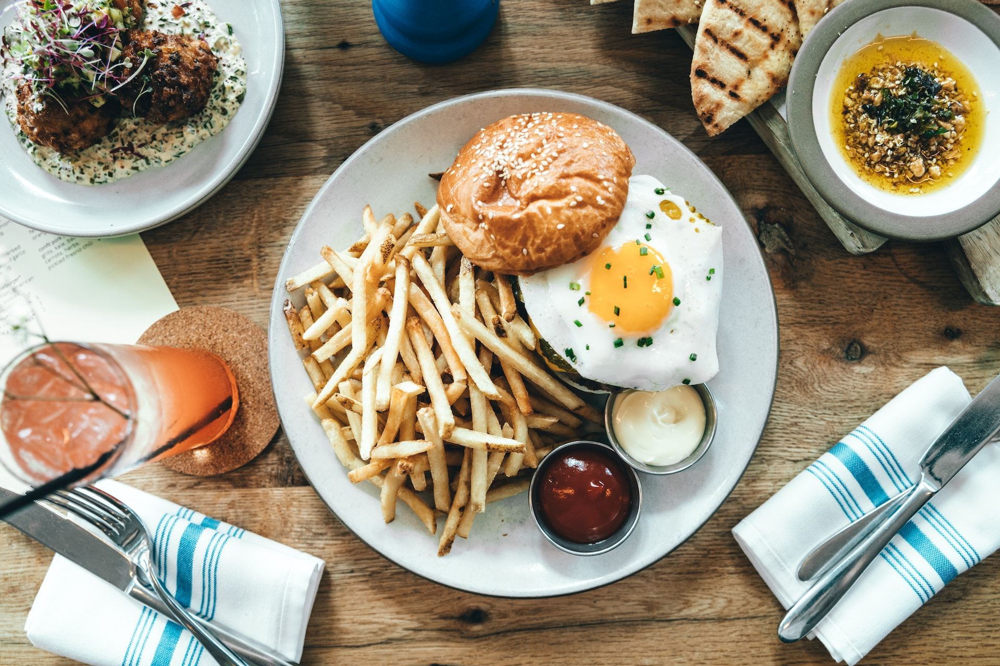
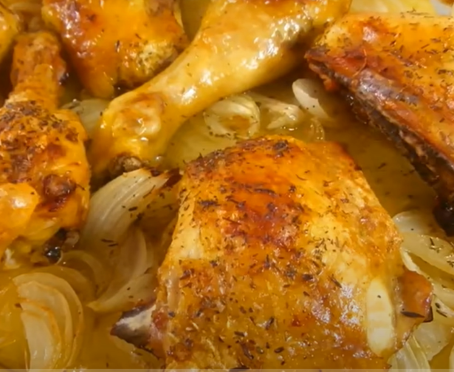

Recetas Culinarias
Inicio
Sobre Nosotros
Recetas
Bienvenido a Recetas Culinarias
En este sitio encontraras una gran variedad de recetas para todo tipo de ocaciones
Receta del día
Pollo Asado al horno con papas y cebolla

Para 4 personas
Ingredientes:
1 pollo entero o 4 muslos completos (cuartos traseros)
4 patatas medianas
4 cebollas medianas
aceite de oliva
sal y pimienta
Tomillo seco